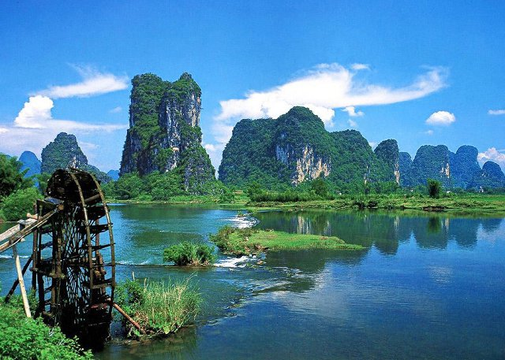
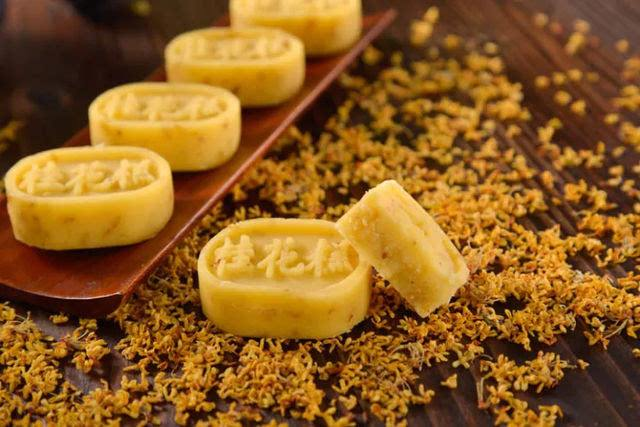
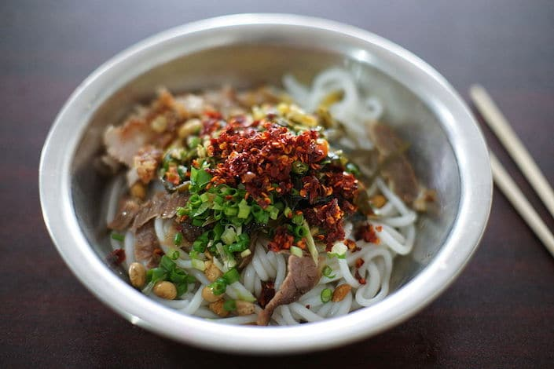
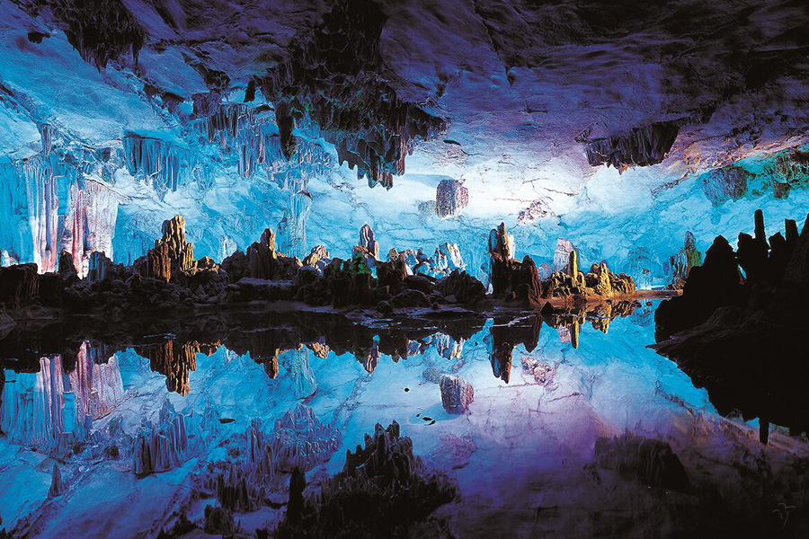

Discover Guilin – Where Rivers Wind Through Karst Peaks and Flavors Warm the Heart



Guilin, in northern Guangxi Zhuang Autonomous Region, isn’t just a city—it’s a living postcard. Here, emerald karst peaks rise abruptly from rice paddies, the Li River glistens like a green ribbon, and local snacks smell like home. A trip to Guilin is about slowing down: cruising the Li River at sunrise, wandering ancient towns with cobblestone streets, and savoring spicy rice noodles that taste like generations of tradition.

Nature lovers will fall for the Li River’s calm waters (where bamboo rafts drift past peaks shaped like elephants), the otherworldly karst of Yangshuo (a short drive away), and Reed Flute Cave—filled with glowing stalactites that look like crystal palaces. History buffs can step back in time at Duxiu Peak (with 1,000-year-old stone carvings), the ancient town of Xingping (where old brick houses line narrow lanes), and Xiangbi Mountain (a landmark with tales of imperial visits).
And the food? Guilin Rice Noodles are non-negotiable—slurpy noodles in a savory broth with pickled vegetables. Osmanthus Cake, sweet and fragrant, tastes like Guilin’s famous osmanthus flowers. For something heartier, Spicy Fried River Fish (fresh from the Li River) is crispy and full of local flavor. By the end of your trip, you’ll understand why people say “Guilin’s scenery is the best under heaven.”

Travel Tips for Guilin
Best Time to Visit:
Tip 1: Spring (March–April): Mild (12°C–22°C), osmanthus flowers bloom, and the Li River’s water is clear—perfect for cruising.
Tip 2: Autumn (September–November): Cool (15°C–25°C), less rain, and karst peaks are wrapped in soft mist—ideal for hiking Yangshuo’s trails.
Tip 3: Avoid summer (June–August): Hot (28°C–35°C) and rainy (risk of Li River floods); winter (December–February) is cool (5°C–15°C) but quiet.
Transportation:
Tip 1: Getting to Guilin:
Fly to Guilin Liangjiang International Airport (KWL)—take the airport bus to downtown (1 hour, 20 CNY) or a taxi (40 mins, ~100 CNY). High-speed trains from Guangzhou (2.5 hours, ~150 CNY) or Changsha (3 hours, ~200 CNY) are convenient.
Tip 2: Getting Around:
Li River Cruise: Take a 4-hour cruise from Guilin to Yangshuo (the most popular way to see the Li River)—book tickets 2 days in advance.
Buses: Cheap (2 CNY) for downtown spots (e.g., Duxiu Peak); use the “Guilin Bus” app for routes.
Taxis/Didi: Taxis start at 8 CNY; Didi is better for trips to Yangshuo (1 hour, ~120 CNY) or Xingping (1.5 hours, ~180 CNY).
Essential Tips:
Tip 1: Bring comfortable shoes: Yangshuo’s trails and Xingping’s cobblestones require walking.
Tip 2: Negotiate bamboo raft prices: Rafts on the Li River (short sections) cost ~80 CNY/person—don’t pay more than that.
Tip 3: Try street food at night markets: Guilin’s Zhengyang Pedestrian Street has the best local snacks after 6 PM.